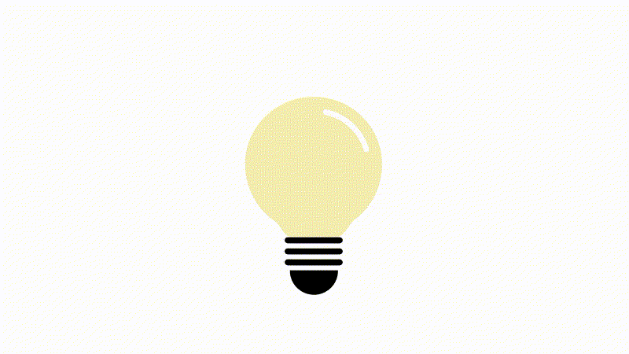

Curiosidade: Você sabia?
Os sistemas antiqueda de energia (conhecidos como no-breaks ou UPS – Uninterruptible Power Supply) foram originalmente desenvolvidos para hospitais e centros militares, onde qualquer interrupção de energia, mesmo de alguns segundos, poderia causar falhas catastróficas – como a perda de dados críticos ou a paralisação de equipamentos vitais.
Hoje, essa tecnologia está presente até em residências e pequenos negócios, protegendo desde servidores até consoles de videogame e modens de internet.